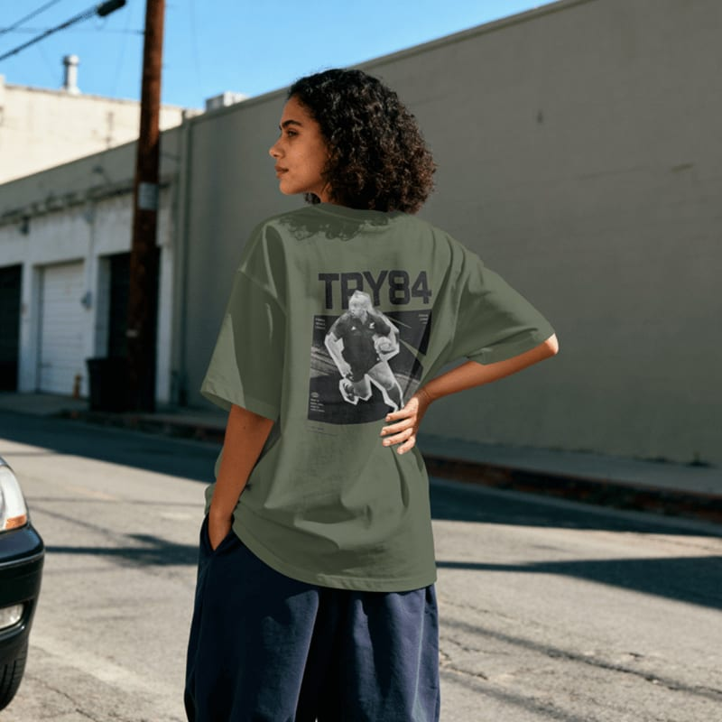
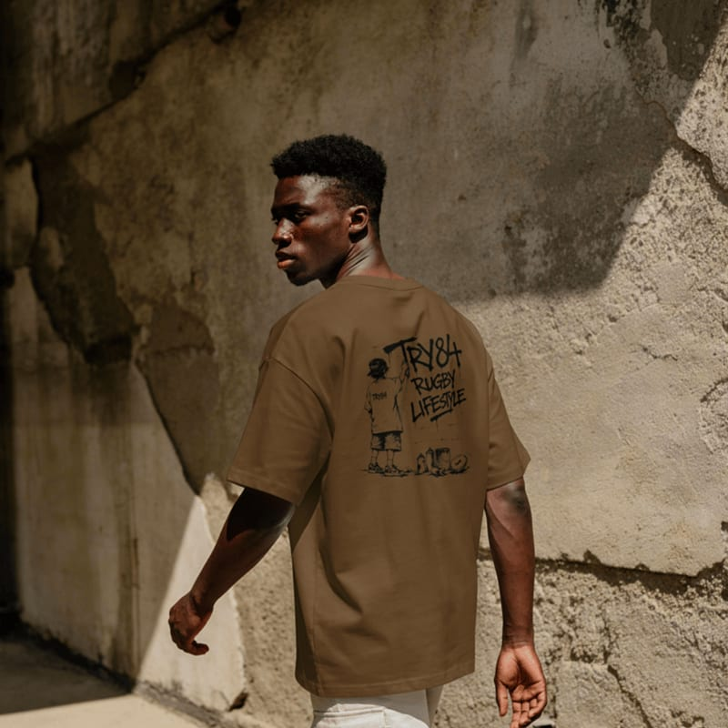
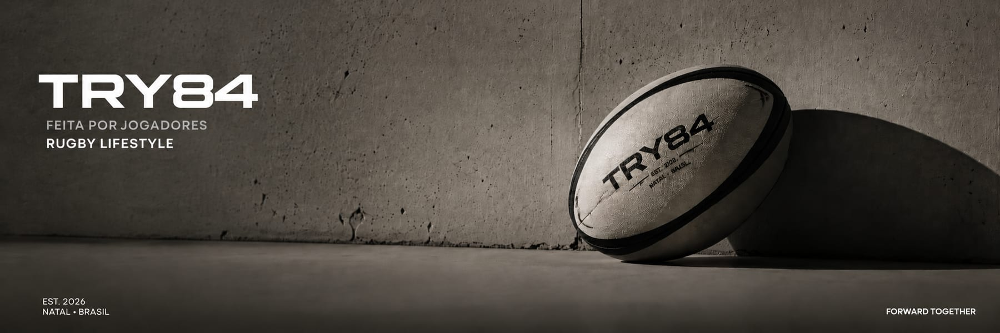

Talvez você não seja o melhor em campo. Mas você joga rugby.
Feita por jogadores. Camisetas oversized de rugby lifestyle, do treino ao terceiro tempo.


A coleção
Oversized, algodão encorpado e estampa nas costas. Escolha a peça e o tamanho, e o pedido vai direto para a TRY84 pelo WhatsApp.

Você não precisa entender. Ainda.
Rugby é um esporte que você precisa conhecer de perto. A TRY84 nasceu no campo, de jogadores para jogadores, e leva para a rua o que acontece dentro dele: os nomes que marcaram o jogo, o espírito de time e o terceiro tempo.
Cada camiseta é oversized, de algodão encorpado, com a estampa grande nas costas.